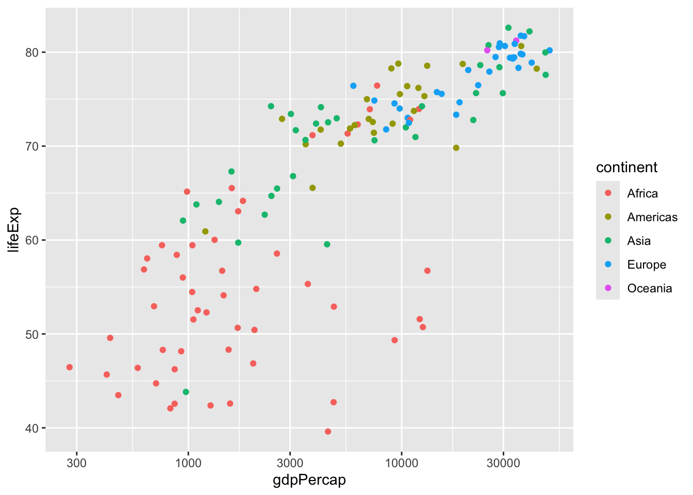
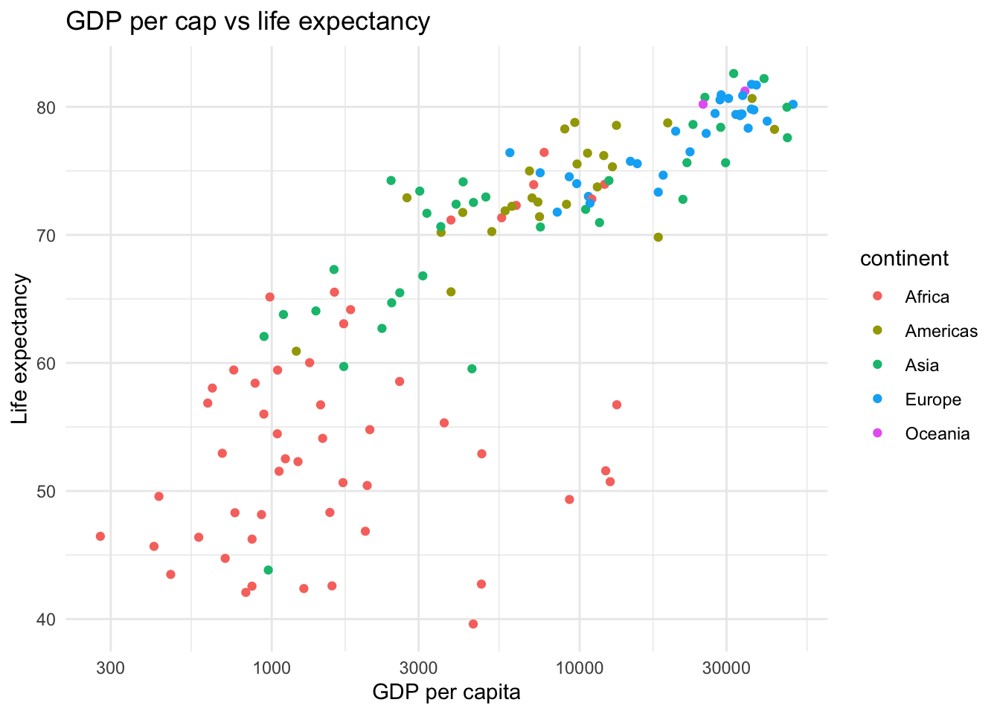

Now that we have learned how to manipulate our data, it’s time to learn how to visualize it!
The “one tool to rule them all” for data visualization in R is the ggplot2 library, originally created by Hadley Wickham. Ggplot2’s “layered grammar of graphics” equips us with a grammar for data visualization that is similar to the grammar we learned for data manipulation, which used the pipe to add dplyr operations together.
The “gg” in “ggplot2” stands for “grammar of graphics” and the “2” stands for “2” (as in, this is the second iteration of the ggplot library that Hadley Wickham created, the first being lost to the ether.)
In this chapter, we’re going to continue working with the gapminder dataset, and since this is a new quarto document, to do that, we need to load it again:
# A tibble: 1,704 × 6
country continent year lifeExp pop gdpPercap
<chr> <chr> <dbl> <dbl> <dbl> <dbl>
1 Afghanistan Asia 1952 28.8 8425333 779.
2 Afghanistan Asia 1957 30.3 9240934 821.
3 Afghanistan Asia 1962 32.0 10267083 853.
4 Afghanistan Asia 1967 34.0 11537966 836.
5 Afghanistan Asia 1972 36.1 13079460 740.
6 Afghanistan Asia 1977 38.4 14880372 786.
7 Afghanistan Asia 1982 39.9 12881816 978.
8 Afghanistan Asia 1987 40.8 13867957 852.
9 Afghanistan Asia 1992 41.7 16317921 649.
10 Afghanistan Asia 1997 41.8 22227415 635.
# ℹ 1,694 more rows
Note that I also loaded the tidyverse library again–it turns out that ggplot2, like the dplyr package from the previous chapter, is one of the core tidyverse packages. This means that rather than loading ggplot2 independently (library(ggplot2)), I typically just load the tidyverse library instead (library(tidyverse)), which will simultaneously load both the ggplot2 library and the dplyr library (along with a few others).
Our goal in this chapter is to learn how to write the code to create publication-ready data visualizations (as well as quick-and-dirty non-publication-ready visualizations–but those are less impressive). For example, with just a few lines of ggplot2 code, you can create this figure (click the “code” button to see the code):
Code
gapminder |>filter(year ==2007) |>ggplot() +geom_point(aes(x = gdpPercap, y = lifeExp, color = continent,size = pop /1000000),alpha =0.6) +scale_x_log10() +scale_size_continuous(range =c(1, 20)) +labs(x ="GDP per capita", y ="Life expectancy", title ="GDP per cap vs life expectancy", size ="Population (millions)",color ="Continent") +theme_classic()
By the end of this chapter, you will be able to create a version of this plot yourself! However, it is worth noting what this chapter won’t cover, which is the actual principles for creating effective data visualizations that tell a compelling story, and deciding which data visualizations to use to answer your specific question (or how to come up with good questions, for that matter). While I’d love to cover these things here, at the end of the day, this is an R book, which teaches you how to do practical things in R.
Fortunately, there are many resources that do teach these things, such as Storytelling with Data by Cole Nussbaumer Knaflic, which is a favorite of mine (and a great resource for learning how to produce effective graphics in general) and even the chapter on data visualization of my book with Bin Yu, Veridical Data Science.
7.1 The layered grammar of graphics
To create a ggplot figure, you start by creating an empty ggplot2 “canvas” using the ggplot() function. Our “canvas” here is the following grey box:
ggplot()
The first thing I need to do is to tell ggplot which dataset object (a data frame/tibble) to use to create my plot, and I do that by providing the name of my data object as the argument of ggplot():
ggplot(gapminder)
Nothing has changed on our canvas, but now, when we add some “layers” to our plot, ggplot now knows where to look for the variables that I will refer to.
To add a layer to my plot, I literally use the plus symbol, +. The name of the layer that creates a scatterplot is geom_point() (because a scatterplot is made up of a collection of “points”).
I can add my points layer like this:
ggplot(gapminder) +geom_point()
Error in `geom_point()`:
! Problem while setting up geom.
ℹ Error occurred in the 1st layer.
Caused by error in `compute_geom_1()`:
! `geom_point()` requires the following missing aesthetics: x and y.
But I got an error because I haven’t told ggplot which columns/variables in my data I want to use to define my scatterplot. Specifically, I need to tell it which columns should define the x- and y-coordinates of my scatterplot points.
I do that by providing an “aesthetics”, aes(), function as the argument of my points layer, in which I specify which column defines the x-coordinate (x = gdpPercap) and which column defines the y-coordinate (y = lifeExp).
ggplot(gapminder) +geom_point(aes(x = gdpPercap, y = lifeExp))
Now we have our scatterplot, and ggplot has even very kindly provided x- and y-axis names!
Note the error that I get if I forget to place my x and y coordinates inside the aes() function, like this:
ggplot(gapminder) +geom_point(x = gdpPercap, y = lifeExp)
Error in eval(expr, envir, enclos): object 'gdpPercap' not found
Unfortunately, ggplot can only find your data frame columns (such as gdpPercap) when they are referenced inside the aes() function.
I like to think of the aesthetics function aes() as a secret code that tells ggplot that the objects I’m referring to are columns of my data frame.
A common mistake to make is to use a pipe |> instead of a + to add layers to your ggplot, like this:
ggplot(gapminder) |>geom_point(aes(x = gdpPercap, y = lifeExp))
Error in `geom_point()`:
! `mapping` must be created by `aes()`.
ℹ Did you use `%>%` or `|>` instead of `+`?
Fortunately, the error is quite helpful here–it says “Did you use %>% or |> instead of +?” This is hinting that the pipe on the first line of my code should have been a +.
If you remember that the pipe works by taking the object on its left-hand-side and placing it into the first argument of the function on its right-hand-side, then it kind of makes sense that the pipe doesn’t work for creating layered ggplot objects.
The code ggplot(gapminder) |> geom_point(aes(x = gdpPercap, y = lifeExp)) would be equivalent to geom_point(ggplot(gapminder), aes(x = gdpPercap, y = lifeExp)), but the geom_point() function doesn’t want a ggplot() object as its first argument, it wants an aes() object!
Although I can’t use the pipe |> to create my layered ggplot2 figure, the ggplot() function itself wants our data object (gapminder, in this case) as its first argument, so I can pipe my data into my ggplot() function like this:
gapminder |>ggplot() +geom_point(aes(x = gdpPercap, y = lifeExp))
Why might I want to do this? I actually do this a lot, usually because I often want to make temporary minor modifications to my data before plotting it (but I don’t necessarily want to create a new intermediate object).
For example, if I want to recreate the scatterplot above just for the year 2007, I could conduct a filter step and then pipe the resulting filtered data frame object into ggplot():
gapminder |>filter(year ==2007) |>ggplot() +geom_point(aes(x = gdpPercap, y = lifeExp))
Pay attention to where I have used |> and + in the code above!
+ versus |>
Probably one of the most common errors I make when doing data analysis is getting confused about when I should use + and when I should use |>.
When we are adding ggplot layers, we always use +, but when we are chaining functions together, we use the pipe, |>.
To understand why, remember that the pipe, |> takes the object on the left and places it into the first argument of the function on the right. This is not what our ggplot2 functions are doing though, these are layering objects on top of one another, and so they use + instead of |>.
Alternatively, I could have defined a new object containing the gapminder data for 2007, and provided this filtered data frame object as the argument of the ggplot() function:
# define a new data framegapminder_2007 <- gapminder |>filter(year ==2007)# provide this data frame as the argument of my ggplot() functionggplot(gapminder_2007) +geom_point(aes(x = gdpPercap, y = lifeExp))
When do you think I might prefer to do the “all-at-once” approach:
gapminder |>filter(year ==2007) |>ggplot() +geom_point(aes(x = gdpPercap, y = lifeExp))
versus defining an intermediate gapminder_2007 object and then creating my plot with ggplot(gapminder_2007):
If I am going to use this filtered 2007 version of the data for anything other than this single plot (e.g., if I am going to create several plots using just the data from 2007), then I would prefer the latter approach, which defines the gapminder_2007 object, rather than conducting the filtering every time. But if this is the only time I am going to use this 2007 data, then I would prefer the former approach, which avoids defining an unnecessary object, gapminder_2007.
In general, if you are going to be performing the same action multiple times, for example, to create several different plots, then it’s more efficient to create an object that you can reuse.
Having defined gapminder_2007, I can now use it to create a new plot, this time a histogram of lifeExp values in 2007:
`stat_bin()` using `bins = 30`. Pick better value with `binwidth`.
Note that to create a histogram using geom_histogram(), I just need to give it the x-axis variable, lifeExp, and it will do all of the binning and tallying up of counts needed to determine the y-axis for me.
`stat_bin()` using `bins = 30`. Pick better value with `binwidth`.
7.2 Global versus local aesthetics
In the examples above, I provided the aesthetic properties as an argument of the geom_point() and geom_histogram() layers of my ggplot object. However, I could have provided these aesthetic properties inside the initial ggplot() function itself, leaving the geom_point() function without any arguments:
ggplot(gapminder_2007, aes(x = gdpPercap, y = lifeExp)) +geom_point()
This is common when you want to add many layers, all of which have the same aesthetic properties, for example, by adding a geom_smooth() layer, which will add a LOESS fitted curve to our scatterplot.
ggplot(gapminder_2007, aes(x = gdpPercap, y = lifeExp)) +geom_point() +geom_smooth()
`geom_smooth()` using method = 'loess' and formula = 'y ~ x'
I could specify the aesthetic properties separately in each layer, but this is less efficient since it involves repeating the aes(x = gdpPercap, y = lifeExp) code in each layer like this:
ggplot(gapminder_2007) +geom_point(aes(x = gdpPercap, y = lifeExp)) +geom_smooth(aes(x = gdpPercap, y = lifeExp))
`geom_smooth()` using method = 'loess' and formula = 'y ~ x'
When you specify the aesthetics inside the ggplot() function, you are specifying global aesthetics that will be applied to all layers of your ggplot figure, but when you specify the aesthetics inside the individual geom_ layers, you are specifying local aesthetics that will be applied to that layer only.
For whatever reason, I tend to find myself mostly specifying local aesthetics unless I have many layers all of which are using the same aesthetics. This is just my personal preference though, and it may differ from yours.
7.3 Additional ggplot2 aesthetics
So far we have seen that x and y are “aesthetic” properties of the points in a scatterplot, and x is an “aesthetic” property of the bars in a histogram. But they aren’t the only aesthetic properties that we can specify.
For example, some other scatterplot aesthetic properties that we can specify include color, size, and shape.
You can specify the color of the points using the color aesthetic:
ggplot(gapminder_2007) +geom_point(aes(x = gdpPercap, y = lifeExp, color = continent))
In this example, I’m specifying color = continent inside the aes() function, which, because it is inside the aes() function, tells ggplot2 that continent is a column in my data and that it should come up with a unique color for each unique continent value.
What if I wanted to just make all of the points in my scatterplot “blue”, instead of based on the continent column?
If I just replace color = continent with color = "blue" (where I’m providing quotes around “blue” because I want to specifically pass the character value “blue”), I get pink-red (salmon?) points instead of blue points!
ggplot(gapminder_2007) +geom_point(aes(x = gdpPercap, y = lifeExp, color ="blue"))
Why does this happen? The issue arises because a character value (rather than a column name) is provided inside the aes() function, which is intended for referencing columns of your data frame. When ggplot sees "blue" inside aes(), it temporarily creates a new column in the data frame filled entirely with the value "blue" for all data points. This effectively creates a categorical variable with only one category: "blue".
Since this new “column” has just one unique value, ggplot assigns a single color to represent it. However, ggplot doesn’t care what the value is–it just uses the first default color from the ggplot2 palette, which happens to be this nice salmony color (and definitely not blue).
If you want to define an aesthetic of your plot that does not depend on a column in your data, you need to specify it outside the aes() function. So if we just move the color = "blue" argument outsideaes(), we get what we wanted (pay close attention to the closing parentheses and compare with the code in the previous chunk):
ggplot(gapminder_2007) +geom_point(aes(x = gdpPercap, y = lifeExp), color ="blue")
Note that when I start having several aesthetic properties, I tend to place each one on its own line, but pay attention to the indentation of each line. Arguments of the inner aes() function, such as x and y are placed further to the right than arguments of the outer geom_point() function (such as color). RStudio will do this automatically for you when you hit “return” to move an argument to a new line. This indentation makes it a bit easier to see which arguments are for which function in a series of nested functions.
ggplot(gapminder_2007) +geom_point(aes(x = gdpPercap, y = lifeExp), color ="blue")
Keyboard shortcut for fixing code indentation
A handy keyboard shortcut for fixing the indentation of your code in RStudio is to highlight the misaligned code and use Cmd + I.
This shortcut will turn the following code with wacky nonsensical indentation:
ggplot(gapminder_2007) +geom_point(aes(x = gdpPercap, y = lifeExp), color ="blue")
into nice, properly indented code like this:
ggplot(gapminder_2007) +geom_point(aes(x = gdpPercap, y = lifeExp), color ="blue")
Recreate the scatterplot of lifeExp and gdpPercap in 2007, but make all points have a “triangle” shape.
ggplot(gapminder_2007) +geom_point(aes(x = gdpPercap, y = lifeExp), shape ="triangle")
7.3.1 Transparency
Sometimes when you have a lot of data points all sitting on top of one another, it can be helpful to add some transparency. You can do this using the alpha argument.
alpha takes values between 0 and 1. alpha = 1 is not transparent at all, and alpha = 0 is completely transparent. The scatterplot below has alpha = 0.5:
ggplot(gapminder_2007) +geom_point(aes(x = gdpPercap, y = lifeExp), alpha =0.5)
Since we are not using a column/variable in the data frame to specify alpha, note that it is outside the aes() function of geom_point().
Recreate the 2007 gdpPercap vs lifeExp plot where each point has color determined by continent, size determined by pop, and all the points have a transparency of 0.5 like this:
ggplot(gapminder_2007) +geom_point(aes(x = gdpPercap, y = lifeExp, color = continent, size = pop), alpha =0.5)
7.4 Other kinds of plots
7.4.1 Line plots
Line plots are great for showing how things change over time.
If I want to see how lifeExp changes by year, I can try to create a line plot using geom_line() with lifeExp on the y-axis, and year on the x-axis:
ggplot(gapminder) +geom_line(aes(x = year, y = lifeExp))
Ugh. gross. I don’t like this plot at all. It looks terrible. What’s with all the zigzags?
Can you figure out what’s going on in this plot? As a hint… how many lifeExp values do we have for each year? We have many! One for each country (and there are almost 200 countries!)
Here are all the lifeExp values corresponding to 1962
# A tibble: 142 × 3
year country lifeExp
<dbl> <chr> <dbl>
1 1962 Afghanistan 32.0
2 1962 Albania 64.8
3 1962 Algeria 48.3
4 1962 Angola 34
5 1962 Argentina 65.1
6 1962 Australia 70.9
7 1962 Austria 69.5
8 1962 Bahrain 56.9
9 1962 Bangladesh 41.2
10 1962 Belgium 70.2
# ℹ 132 more rows
So the vertical lines we see in our “line plot” above correspond to the range of lifeExp values for each year, and then it probably just connects the final lifeExp value that year to the first lifeExp value for the next year, and those are the diagonal lines that we see.
In general, to create a single line, we want just one value for the y-axis (e.g., lifeExp) per x-axis value (e.g., year). To satisfy this requirement, we can look at the data for just one country:
# A tibble: 12 × 3
year country lifeExp
<dbl> <chr> <dbl>
1 1952 Australia 69.1
2 1957 Australia 70.3
3 1962 Australia 70.9
4 1967 Australia 71.1
5 1972 Australia 71.9
6 1977 Australia 73.5
7 1982 Australia 74.7
8 1987 Australia 76.3
9 1992 Australia 77.6
10 1997 Australia 78.8
11 2002 Australia 80.4
12 2007 Australia 81.2
Now, we have just one lifeExp value for each year, and we could create a line plot using these values:
gapminder |>filter(country =="Australia") |>ggplot() +geom_line(aes(x = year, y = lifeExp))
Gee, wiz! That looks way better! It’s a single line, and boy-oh-boy it sure looks like we Aussies are living longer and longer! Onya, Mate!
I could make the same plot for the US, by filtering to the US instead of Australia:
But what if I wanted to make a plot with both of these lines on it?
There are at least two ways I could do that. One is good, and the other is not so good.
I’ll show you the not-so-good approach first (so you can really appreciate the good approach.)
The not-so-good approach involves creating separate data frames for Australia and the US and adding a separate line layer for each country. The first line layer will be just using gapminder_us, the data frame for the US, and the second line layer will have its own data argument to which I’ll pass gapminder_au, the data frame for Australia:
# define the data frame for the USgapminder_us <- gapminder |>filter(country =="United States")# define the data frame for the Australiagapminder_au <- gapminder |>filter(country =="Australia")# Create a line plot for the US and then add a line plot layer for Australiaggplot(gapminder_us) +geom_line(aes(x = year, y = lifeExp)) +geom_line(aes(x = year, y = lifeExp), data = gapminder_au)
Here the first geom_line() layer is based on the “global” gapminder_us data frame provided as the argument of ggplot(), and the second line is based on the “local” gapminder_au data frame provided in the data argument of the second geom_line() layer (when you don’t provide a data argument, each layer will be based on the global data frame provided to ggplot())
While this technically works, this approach isn’t great for a few reasons. First, I can’t tell which line is which. There is no legend (and it’s unfortunately not all that easy to add a legend manually to a ggplot2 figure). Another reason this approach sucks is that it’s not scalable. If I wanted to do this for 10 countries, I’d have to create 10 different data frames and add 10 line layers to my plot. No thanks.
Instead of adding separate line layers for each country, I can use the color or group aesthetic to tell ggplot() that I want separate lines for each country.
In the code below, I create a single data frame that contains the data for Australia and the US only, and then I create a ggplot2 line plot, specifying color = country inside my aes() function, which will give me a separate line for each country:
gapminder |>filter(country %in%c("Australia", "United States")) |>ggplot() +geom_line(aes(x = year, y = lifeExp, color = country))
Now, each country’s line has a different color and ggplot has created a legend for me.
An alternative if I want a separate line for each country, but don’t want each line to have a different color, is to use the group aesthetic instead of the color aesthetic:
gapminder |>filter(country %in%c("Australia", "United States")) |>ggplot() +geom_line(aes(x = year, y = lifeExp, group = country))
For example, the following code creates a line plot of lifeExp by year for each country on the entire “Americas” content (with no colors or legend).
gapminder |>filter(continent =="Americas") |>ggplot() +geom_line(aes(x = year, y = lifeExp, group = country))
Compute the average life expectancy for each continent for each year, and then create a line plot of the average life expectancy for each continent over time (each continent should have its own different colored line).
Here is an example of the plot I want you to make:
gapminder |>group_by(continent, year) |>summarize(mean_life_exp =mean(lifeExp)) |>ggplot() +geom_line(aes(x = year, y = mean_life_exp, color = continent))
`summarise()` has grouped output by 'continent'. You can override using the
`.groups` argument.
7.4.2 Boxplots
Like scatterplots created with geom_point(), boxplots created with a geom_boxplot() layer desire an x and a y aesthetic, however, unlike geom_point() which wants both the x and y variables to be continuous numeric variables, geom_boxplot() wants one of the x and y aesthetics to be a categorical (character or factor) variable and the other one to be numeric and geom_boxplot() will create a separate boxplot for each categorical value.
For example, below we create a boxplot of lifeExp for each continent:
ggplot(gapminder) +geom_boxplot(aes(x = continent, y = lifeExp))
The bottom of the box part of a boxplot corresponds to \(Q_1\), the first quartile of the variable (the value for which 25% of values are less than it) and the top of the box corresponds to the third quartile, \(Q_3\) of the variable (the value for which 75% of values are less than it). The bar in the middle is the median, which corresponds to the second quartile, \(Q_2\) (the value for which 50% of values are less than it). The lines that extend from the bottom and top of the boxplot reach as far as \(Q_1 - 1.5 (Q_3 - Q_1)\) and \(Q_3 + 1.5 (Q_3 - Q_1)\), respectively, and all values that are outside this range are shown as points and are called “outliers.”
If you switch the x and the y so the y aesthetic is the categorical/character continent variable, then you get horizontal boxplots instead.
ggplot(gapminder) +geom_boxplot(aes(x = lifeExp, y = continent))
geom_boxplot() is great for creating side-by-side boxplots for the different levels/values of a categorical variable.
But you can create single boxplots for an entire variable, such as lifeExp, by just providing y = lifeExp to your aesthetic function (leaving x out entirely):
ggplot(gapminder) +geom_boxplot(aes(y = lifeExp))
But I rarely do this–I find boxplots to be most helpful for comparing the distributions of a variable across different groups.
7.4.3 Histograms
If I want to look at the distribution of a single variable, I find it more useful to use a histogram, such as the histogram of lifeExp below:
`stat_bin()` using `bins = 30`. Pick better value with `binwidth`.
A histogram essentially takes the range of a continuous numeric variable, chops it up into binned intervals, and then uses bars to represent how many values fall into each binned interval.
I don’t like that the histogram doesn’t provide outlines for each of the bars, so I often add them in by providing a color value outside the aes() function in my geom_histogram() function:
ggplot(gapminder) +geom_histogram(aes(x = lifeExp), color ="white")
`stat_bin()` using `bins = 30`. Pick better value with `binwidth`.
Notice that color here refers to the outline of the bars, rather than the bars themselves. If you want the bars themselves to have a different color, you need to use the fill aesthetic.
ggplot(gapminder) +geom_histogram(aes(x = lifeExp), color ="white",fill ="cornflowerblue")
`stat_bin()` using `bins = 30`. Pick better value with `binwidth`.
You can also provide a fill to your histogram where the bars are colored using a categorical variable, such as continent:
ggplot(gapminder) +geom_histogram(aes(x = lifeExp, fill = continent), color ="white")
`stat_bin()` using `bins = 30`. Pick better value with `binwidth`.
But be warned that these bars are “stacked” on top of one another, so the overall shape is the same as that of the entire variable in the histogram above.
If you want to compare the distributions of the lifeExp variable across each continent where each continent’s histogram starts from 0, you need to specify an additional argument to geom_histogram(), position = "identity".
ggplot(gapminder) +geom_histogram(aes(x = lifeExp, fill = continent), color ="white",position ="identity")
`stat_bin()` using `bins = 30`. Pick better value with `binwidth`.
Now each continent’s histograms start at y = 0, but because they are opaque, it’s hard to properly see how the distributions overlap.
This is another place where transparency comes in handy! If we set alpha = 0.5, it becomes slightly easier to see how the distributions overlap.
ggplot(gapminder) +geom_histogram(aes(x = lifeExp, fill = continent), color ="white",position ="identity",alpha =0.5)
`stat_bin()` using `bins = 30`. Pick better value with `binwidth`.
This plot is a bit busy though, so it might be a bit easier to just compare two groups, such as “Europe” and “Africa”:
gapminder |>filter(continent %in%c("Europe", "Africa")) |>ggplot() +geom_histogram(aes(x = lifeExp, fill = continent), color ="white",position ="identity",alpha =0.5)
`stat_bin()` using `bins = 30`. Pick better value with `binwidth`.
7.4.4 Bar charts
A bar chart is like a histogram but for categorical variables instead of continuous numeric ones.
You can create a count bar chart, by providing a categorical (character/factor) variable as your x-aesthetic to geom_bar(), which will then add up how many times each value of the categorical variable appears and use this as the height of the bars:
# create a bar chart of the continent *counts*ggplot(gapminder) +geom_bar(aes(x = continent))
So the "Africa" continent appears over 600 times in the data, while the "Asia" appears around 400 times.
If you want to create bar charts in which you manually specify the height of each bar based on a variable in your data, you want to use geom_col() instead of geom_bar().
For example, below, I create a bar chart that shows the average life expectancy for each continent, first you have to calculate the average life expectancy for each continent, and then you can pipe that into ggplot with a geom_col() layer that uses x = continent as the x-aesthetic which will be used to determine how many bars there are (and their names), and your calculated y = mean_life_exp as the height aesthetic.
Like histograms, you can color your bars using the fill aesthetic.
To give each bar a different color per continent, provide fill = continentinside the aes() function:
ggplot(mean_life_exp) +geom_col(aes(x = continent, y = mean_life_exp, fill = continent))
And to give each bar the same global color, provide your color to filloutside the aes() function (pay close attention to the closing parentheses and indentation):
ggplot(mean_life_exp) +geom_col(aes(x = continent, y = mean_life_exp), fill ="cornflowerblue")
7.5 Getting fancy with ggplot2
Now that you’ve seen the most common ggplot2 layers I typically use, let’s talk about how to do even fancier things with them.
7.5.1 Transformations
You can apply log-scale transformations to your axis by adding a scale layer. Below, the layer scale_x_log10() converts the x-axis to a \(\log_{10}\) scale, so each break increases by an order of magnitude rather than by a fixed amount.
ggplot(gapminder_2007) +geom_point(aes(x = gdpPercap, y = lifeExp, color = continent)) +scale_x_log10()
Because I want to keep using this plot as I show you more cool things, I’m going to save it as a variable!
I can do this by assigning it to a new variable name like this:
life_gdp_scatter <-ggplot(gapminder_2007) +geom_point(aes(x = gdpPercap, y = lifeExp, color = continent)) +scale_x_log10()
As usual, when I define a variable, no output is shown, but I can look at the object contained in this variable by typing its name:
life_gdp_scatter
And the super neat thing is that because this is just a ggplot object, I can keep adding things to it using +!
7.5.2 Labels
You can clean the labels of your figure by adding a labs() layer.
life_gdp_scatter +labs(x ="GDP per capita", y ="Life expectancy", title ="GDP per cap vs life expectancy")

This is equivalent to replacing life_gdp_scatter with the code that was used to define it:
ggplot(gapminder_2007) +geom_point(aes(x = gdpPercap, y = lifeExp, color = continent)) +scale_x_log10() +labs(x ="GDP per capita", y ="Life expectancy", title ="GDP per cap vs life expectancy")
And I’m going to update my scatterplot object to contain these new labels by overwriting my life_gdp_scatter object with the old one plus the labels layer:
life_gdp_scatter <- life_gdp_scatter +labs(x ="GDP per capita", y ="Life expectancy", title ="GDP per cap vs life expectancy")
7.5.3 Themes
Next, I want to give my figure a theme by adding a themes layer. There are a lot of theme options. My favorite is theme_classic():
The last neat ggplot2 thing I want to show you is how to create a grid of plots using facet_wrap().
If I have a bunch of line plots on the same plot like this:
gapminder |>filter(continent =="Americas") |>ggplot() +geom_line(aes(x = year, y = lifeExp, group = country))

I might find myself wishing that I had a separate plot for each country, but I don’t want to actually write the code to create a separate line plot for each country manually.
Fortunately, facet_wrap() (and facet_grid()) can do this for me. Below I take the same code and add a facet_wrap() layer where I specify which categorical variable in my data I want to use to specify the different plot panels (I write ~country to create a separate panel for each value in country). This is essentially just taking each line in the plot above and giving it its own plot. Each plot will inherit the aesthetic properties of the geom_line() layer. Note that the ncol = 4 argument of facet_wrap() tells ggplot2 that I want my plot grid to have 4 columns.
My previous plot is all cramped, but if I add some #| fig-height and #| fig-width options to the top of my quarto code chunk, I can control the size of the output in my rendered quarto document, such as
Note that I also rotated my x-axis text 90 degrees using a theme() layer. If you want to start truly customizing your your ggplots, you’re going to get intimately familiar with the theme()layer options.
Create a faceted grid of scatterplots of lifeExp against gdpPercap in 2007 for each continent (i.e., there is a separate panel for each continent). Do some fancy things to make your plot sparkle!
Here is a plot without much fun:
gapminder_2007 |>ggplot() +geom_point(aes(x = lifeExp, y = gdpPercap)) +facet_wrap(~continent)